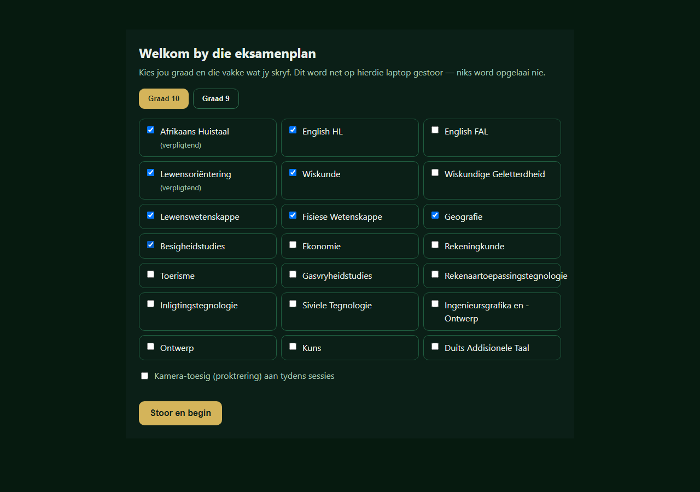
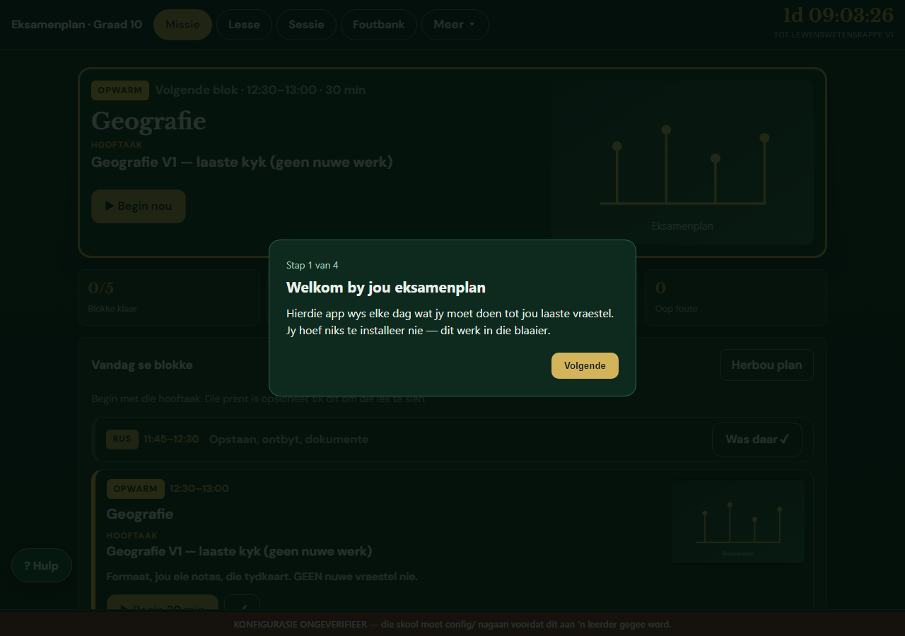
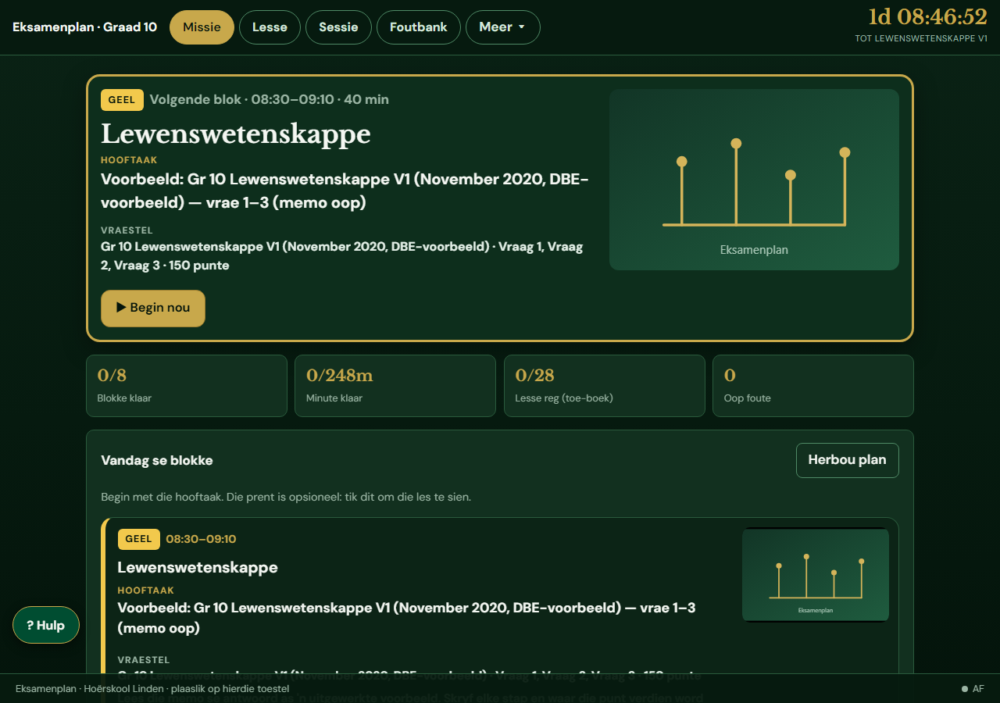
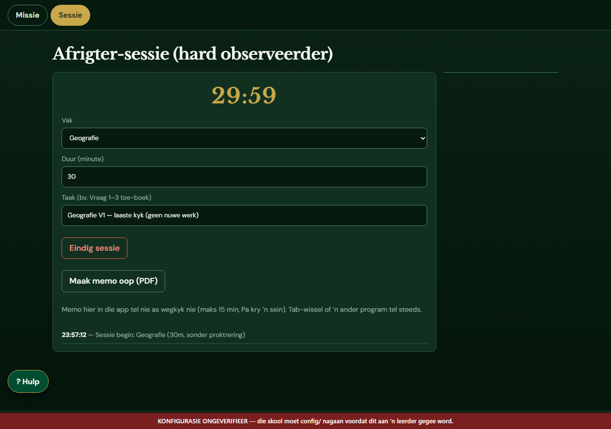
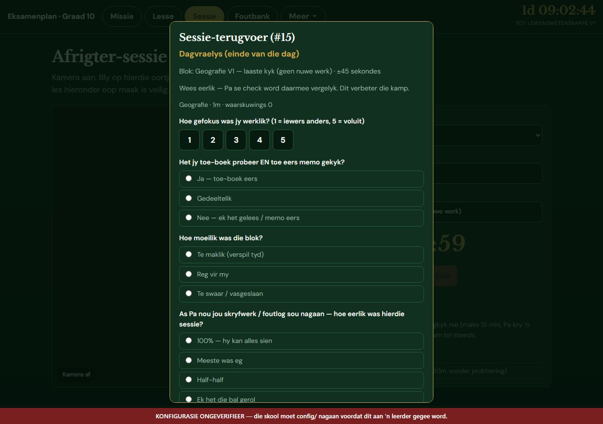

Eksamenplan — die gids vir die huis
Een bladsy. Geen ontwikkeling, geen installasie. Drie goed: die app live sit, elke seun se laptop opstel, en elke dag werk.
Deel 1 · Die app live sit (doen jy een keer)
dist (op hierdie rekenaar: C:\Users\nHunter\OneDrive\Wallie_911_Deepseek\dist)
in die bladsy. Wag tot dit sê die site is live.
eksamenplan-linden.
Skryf die adres neer (of stuur dit vir die seuns). Dit is al — geen kode, geen installasie, geen kaart.
Deel 2 · Elke seun se laptop (doen hulle een keer)
Maak die adres oop. Die app vra een keer:

Dit word net op daardie laptop gestoor. Om later te verander: sit ?opstel=1 agter die adres.
Deel 3 · Die eerste keer binne
Die app wys vier kort kaartjies wat verduidelik hoe dit werk. Een keer per laptop. Om dit weer te sien: ?toer=1.

Deel 4 · Elke dag (drie klikke)



Deel 5 · As iets nie werk nie
- Die app wys nie my vakke nie:
?opstel=1agter die adres, kies weer (dit werk nou een keer, nie op elke herlaai nie). - Die rooi lint onder: "KONFIGURASIE ONGEVERIFIEER" beteken die skool se rooster en vraestelle moet nog nagegaan word. Dis nie 'n fout nie; klik die × om dit vir die dag weg te steek.
- Ek wil die verduideliking weer sien:
?toer=1. - Die bladsy is heeltemal leeg: herlaai (F5). As dit bly, sê vir my wat op die skerm staan.
- Die "Hulp"-knoppie links onder verduidelik die lesse en die foutbank.
Deel 6 · Waar is die data?
Alles bly op die laptop: die keuses, die sessies, die foute. Die app self stuur niks na 'n bediener nie (geen Supabase, geen ntfy). Wat wel van buite kom: die blaaier laai die font en, as jy op 'n vraestel klik, die PDF by die bron se eie adres. Dis gewone web-versoeke, soos enige webwerf.
Om te sien wat gestoor is: F12 → Application → Local Storage → linden10_v2_bok
(Graad 10) of linden9_v2_bok (Graad 9).
Onthou
Die app is 'n plan, nie 'n waarborg nie. Tans is net twee vakke se vraestelle gelaai: Lewenswetenskappe (Graad 10, vier vraestelle) en Natuurwetenskappe (Graad 9, een GEC-vraestel). Die res kom nog. Die vraestelle is egte provinsiale/DBE-vraestelle met memo's; die skool se eie vraestel ken ons nie. Waar die memo nie die hele werk verduidelik nie, moet die handboek bykom — die app sê dit eerlik eerder as om te maak of hy alles weet.